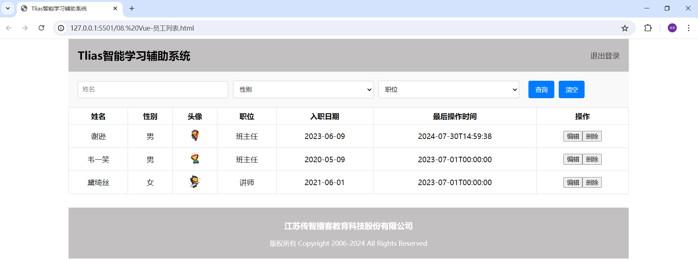
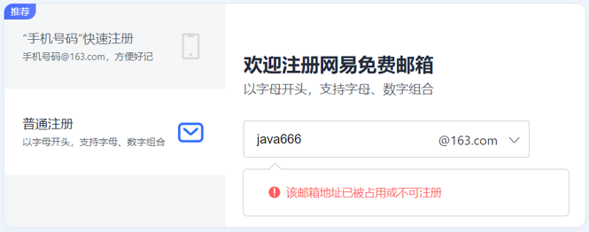
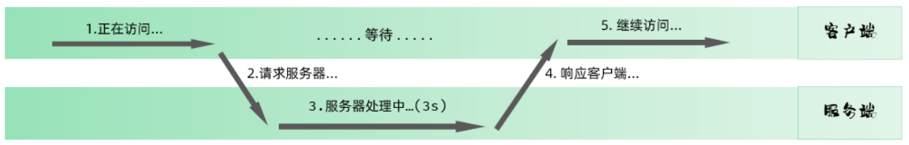
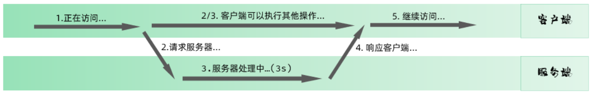
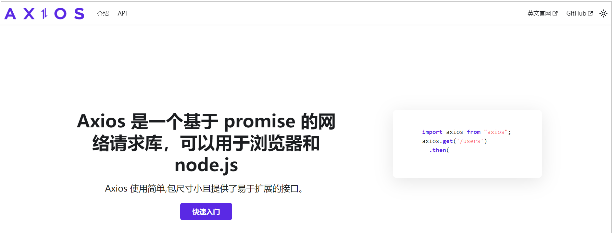

Ajax：Axios 与异步请求
概述
我们前端页面中的数据，如下图所示的表格中的员工信息，应该来自于后台，那么我们的后台和前端是互不影响的2个程序，那么我们前端应该如何从后台获取数据呢？因为是2个程序，所以必须涉及到2个程序的交互，所以这就需要用到我们接下来学习的Ajax技术。

Ajax: 全称Asynchronous JavaScript And XML，异步的JavaScript和XML。其作用有如下2点：
- 与服务器进行数据交换：通过Ajax可以给服务器发送请求，并获取服务器响应的数据。
- 异步交互：可以在不重新加载整个页面的情况下，与服务器交换数据并更新部分网页的技术，如：搜索联想、用户名是否可用的校验等等。
我们详细的解释一下Ajax技术的2个作用：
- 与服务器进行数据交互
如下图所示前端资源被浏览器解析，但是前端页面上缺少数据，前端可以通过Ajax技术，向后台服务器发起请求，后台服务器接受到前端的请求，从数据库中获取前端需要的资源，然后响应给前端，前端在通过我们学习的vue技术，可以将数据展示到页面上，这样用户就能看到完整的页面了。此处可以对比JavaSE中的网络编程技术来理解。

- 异步交互：可以在不重新加载整个页面的情况下，与服务器交换数据并更新部分网页的技术。
如下图所示，当我们再百度搜索java时，下面的联想数据是通过Ajax请求从后台服务器得到的，在整个过程中，我们的Ajax请求不会导致整个百度页面的重新加载，并且只针对搜索栏这局部模块的数据进行了数据的更新，不会对整个页面的其他地方进行数据的更新，这样就大大提升了页面的加载速度，用户体验高。

XML：（英语：Extensible Markup Language）可扩展标记语言，本质是一种数据格式，可以用来存储复杂的数据结构。
同步异步
针对于上述Ajax的局部刷新功能是因为Ajax请求是异步的，与之对应的有同步请求。接下来我们介绍一下异步请求和同步请求的区别。
- 同步请求发送过程如下图所示：

浏览器页面在发送请求给服务器，在服务器处理请求的过程中，浏览器页面不能做其他的操作。只能等到服务器响应结束后才能，浏览器页面才能继续做其他的操 作。
- 异步请求发送过程如下图所示：

浏览器页面发送请求给服务器，在服务器处理请求的过程中，浏览器页面还可以做其他的操作。
Axios
使用原生的Ajax请求的代码编写起来还是比较繁琐的，所以接下来我们学习一门更加简单的发送Ajax请求的技术Axios 。Axios是对原生的AJAX进行封装，简化书写。Axios官网是：https://www.axios-http.cn

入门程序
Axios的使用比较简单，主要分为2步：
1). 引入Axios文件（如果网络不通畅，可以使用离线的已经下载好的js文件，资料中已经提供）
<script src="https://unpkg.com/axios/dist/axios.min.js"></script>
2). 点击按钮时，使用Axios发送请求
<!DOCTYPE html>
<html lang="en">
<head>
<meta charset="UTF-8">
<meta name="viewport" content="width=device-width, initial-scale=1.0">
<title>Axios入门程序</title>
</head>
<body>
<button id="getData">GET</button>
<button id="postData">POST</button>
<script src="https://unpkg.com/axios/dist/axios.min.js"></script>
<script>
//GET请求
document.querySelector('#getData').onclick = function() {
axios({
url:'https://mock.apifox.cn/m1/3083103-0-default/emps/list',
method:'get'
}).then(function(res.获取响应后的数据值) { //成功回调函数 ;
console.log(res.data);
}).catch(function(err) { //失败回调函数 ;
console.log(err);
})
}
//POST请求
document.querySelector('#postData').onclick = function() {
axios({
url:'https://mock.apifox.cn/m1/3083103-0-default/emps/update',
method:'post'
}).then(function(res) {
console.log(res.data);
}).catch(function(err) {
console.log(err);
})
}
</script>
</body>
</html>
知识小贴士：在使用axios时，在axios之后，输入 then 会自动生成成功及失败回调函数结构 。
请求方法别名
Axios还针对不同的请求，提供了别名方式的api，具体格式如下：
axios.请求方式(url [, data [, config]])
异步请求数据 : 会继续向下执行axios中的代码输出 , 最后才会输出 .then中成功访问数据库所获取到的数值 ;
具体如下：
方法 | 描述 |
axios.get(url [, config]) | 发送get请求 |
axios.delete(url [, config]) | 发送delete请求 |
axios.post(url [, data[, config]]) | 发送post请求 |
axios.put(url [, data[, config]]) | 发送put请求 |
我们目前只关注get和post请求，所以在上述的入门案例中，我们可以将get请求代码改写成如下：
axios.get("https://mock.apifox.cn/m1/3083103-0-default/emps/list").then(result => {
console.log(result.data);
})
post请求改写成如下：
axios.post("https://mock.apifox.cn/m1/3083103-0-default/emps/update","id=1").then(result => {
console.log(result.data);
})
案例-异步获取数据
需求：基于axios动态加载员工列表数据
如果使用axios中提供的.then(function(){....}).catch(function(){....})，这种回调函数的写法，会使得代码的可读性和维护性变差。 而为了解决这个问题，我们可以使用两个关键字，分别是：async、await。
可以通过async、await可以让异步变为同步操作。async就是来声明一个异步方法，await是用来等待异步任务执行。
去除成功回调的判断和调用;
代码修改前：
search() {
//基于axios发送异步请求，请求https://web-server.itheima.net/emps/list，根据条件查询员工列表
axios.get(`https://web-server.itheima.net/emps/list?name=${this.searchForm.name}&gender=${this.searchForm.gender}&job=${this.searchForm.job}`).then(res => {
this.empList = res.data.data
})
},
代码修改后：
async search() {
//基于axios发送异步请求，请求https://web-server.itheima.net/emps/list，根据条件查询员工列表
const result = await axios.get(`https://web-server.itheima.net/emps/list?name=${this.searchForm.name}&gender=${this.searchForm.gender}&job=${this.searchForm.job}`);
this.empList = result.data.data;
},
修改后，代码就变成同步操作了，一行一行的从前往后执行。 在前端项目开发中，经常使用这两个关键字配合，使得代码的可读性和可维护性变高。
Ajax 的使用教程 :
只需掌握使用 异步请求就行 ;
正常使用下的action的操作的提交操作是 同步请求 ;
<form action="url" method = "提交格式" > ;
先使用 <script src="https://unpkg\.com/axios/dist/axios\.min\.js"></script>
导入 anxios
使用 anxios 后服务器接收到会 返回 一个 aniox.get(); 会返回服务器打包数据 : res 对象 ;
事件监听器 (){
anxios({
[ ] url : 网址 ;
method : 上传数据的方式 ;
}) . then( function( res[内部会自动生成] ){
对内部传入数据格式了解后实现找寻对象下元素的位置实现调用 ;
}). catch( function(error)){
控制台输出自动创建好的error 元素直接输出就好 ;
})
}
Promise 语法糖 实现以同步代码方式写出异步的请求 :
异步的操作时 会先向下运行 , 出现代码上运行的位置差距 ;
| 声明一个函数是异步函数，自动返回 Promise |
| 等待一个 Promise 执行完，获取结果 |
可以创建一个查询到异步方法 :
向数据存储的url 发出异步请求 获取数据后展示在 双向链接的model 上去 ;
直接展示数据;
search() { 下面的数据是使用post形式储存在网页内部的
//基于axios发送异步请求，请求https://web-server.itheima.net/emps/list，根据条件查询员工列表
axios.get(`https://web-server.itheima.net/emps/list?name=${this.searchForm.name}&gender=${this.searchForm.gender}&job=${this.searchForm.job}`)
.then(res => {
this.empList = res.data.data
})
},
async search() {
//基于axios发送异步请求，请求https://web-server.itheima.net/emps/list，根据条件查询员工列表
const result = await axios.get(`https://web-server.itheima.net/emps/list?name=${this.searchForm.name}&gender=${this.searchForm.gender}&job=${this.searchForm.job}`);
this.empList = result.data.data;
},
实现异步声明之后可以实现吞掉之前的then() 和 catch() 方法;
async/await 本身就是一种更优雅的写法，它“消化”掉了 .then() 和 .catch()，让你可以用像写同步代码一样的方式处理异步操作。
document.querySelector('#getData').onclick = async function() {
const res = await axios({
url: 'https://mock.apifox.cn/m1/3083103-0-default/emps/list',
method: 'get'
});
console.log(res.data);
}
document.querySelector('#getData').onclick = function() {
axios({
url:'https://mock.apifox.cn/m1/3083103-0-default/emps/list',
method:'get'
}).then(function(res.获取响应后的数据值) { //成功回调函数 ;
console.log(res.data);
}).catch(function(err) { //失败回调函数 ;
console.log(err);
})
}